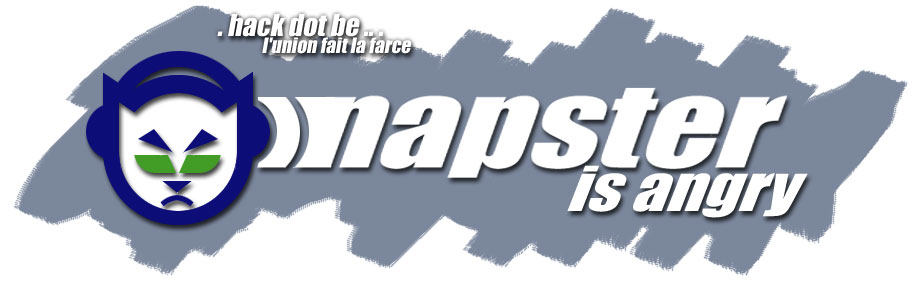

Napster is angry.
Napster is angry at all those people who want it dead.
Big people who call themselves artists (MetallicA, Eminem, Dr. Dre, ...) didn't seem to like Napster.
Why? Because it cuts down on their revenues from CD sales. Because it gives people the chance to
actually listen to the songs before buying the whole CD. Because it gives people the chance to found
out their album actually sucks before buying it.
In fact, many people will buy the CD if the tracks are good, regardless the fact they might already
have it on MP3. I bought Eminem's CD, although I had them all on MP3. I bought it because it was good,
I might not have bought it if I didn't hear the songs first.
Artists shouldn't even be paid for CD's IMHO. Anyone can make a CD and it will be sold, and the author
ears money sitting on his lazy ass. An artist should make money from working, just like anyone else.
He should receive revenues from his concerts only, which probably pays him more than anything else already.
Anyways... The RIAA and IFPI claims to have lost money due to Napster. Bullshit! The sale rates were released
a few days ago and it looks like there was 3 times as much income in 2000 as there was in 1999. Go figure...
This hack was done by the HACK.BE team. Yes, we are still alive. No, HACK.BE is not www.hack.be.
Looking for the original site? Click here!